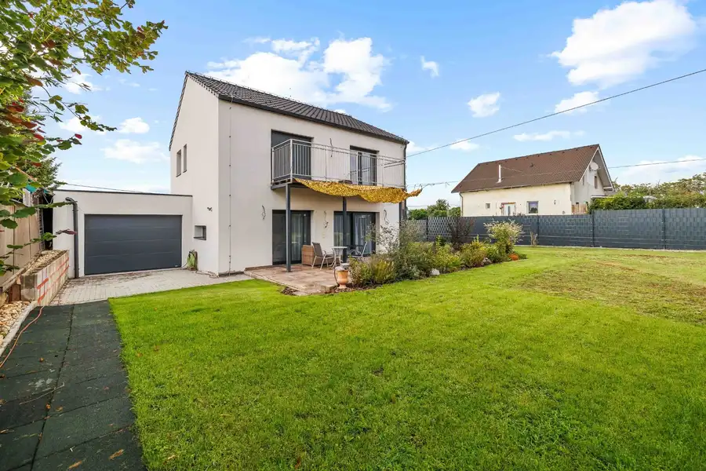
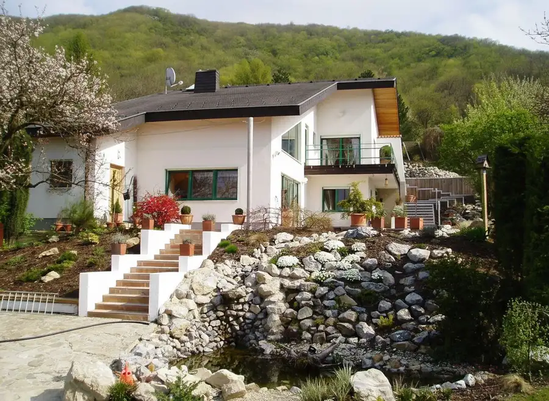
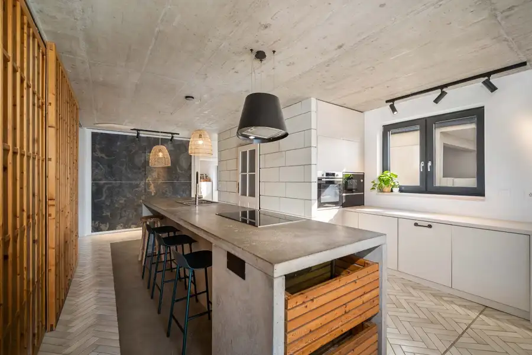
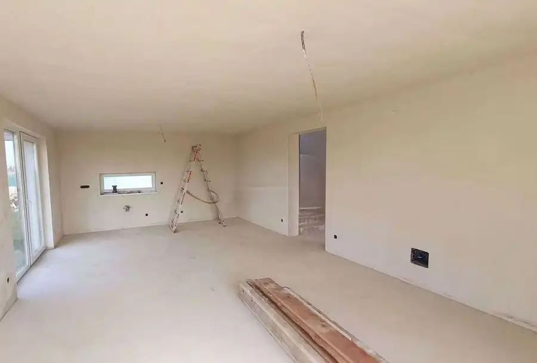
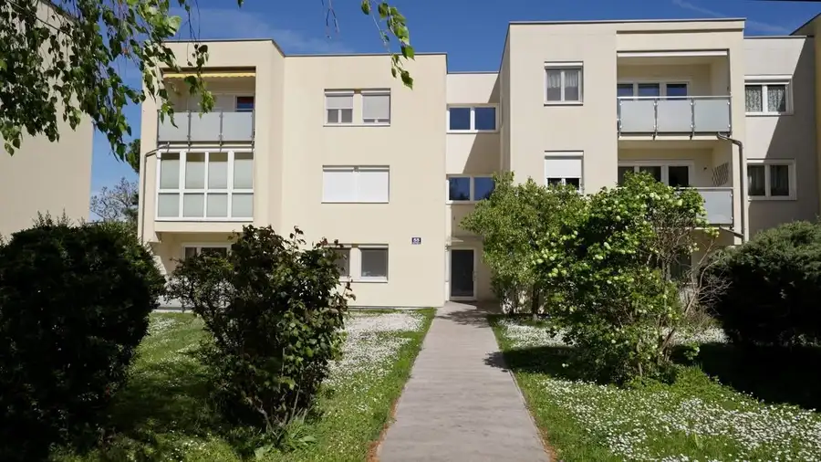
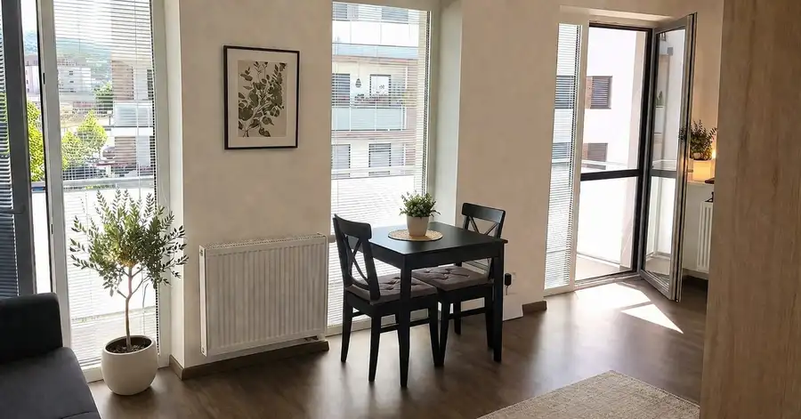
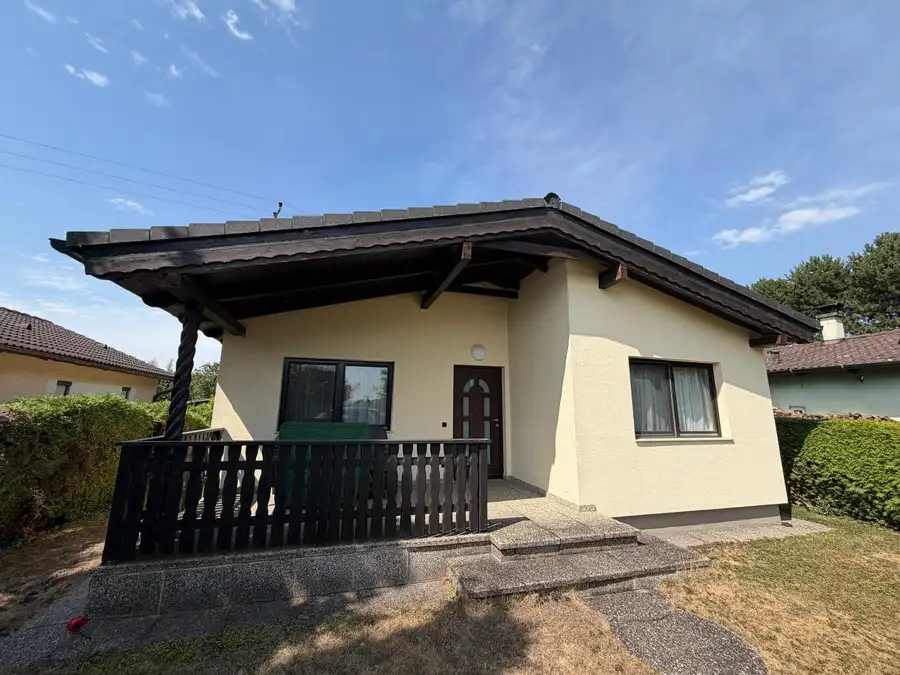
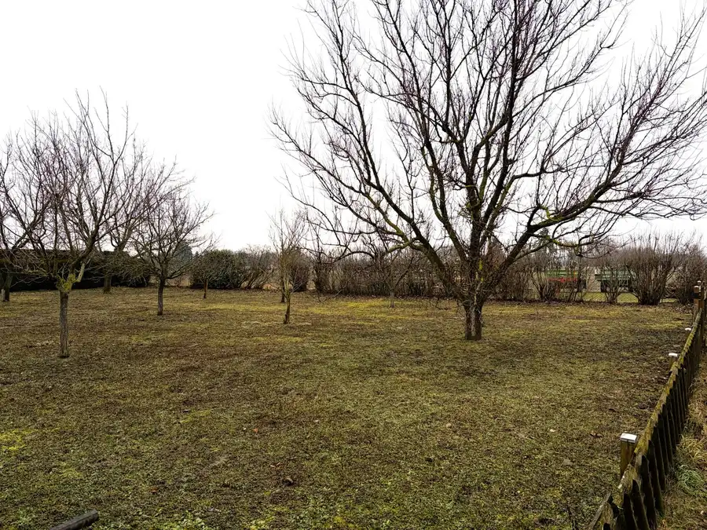

Aktuálna ponuka
Nehnuteľnosti, ktoré ponúkam
8 nehnuteľností na predaj a prenájom. Vyberte typ, alebo napíšte lokalitu.
8 z 8 ponúk

Rodinné domy10 419 000 €NOVOSTAVBA: 5-izbový rodinný dom v Breitensee Marchegg 5-izbový125 m² Ak hľadáte dom, ktorý spája komfort bývania s pokojom vidieckeho prostredia, potom vás táto ponuka v obci Breitensee (okres Gänserndorf) určite…
Rodinné domy10 1 290 000 €Exkluzívna vila s nádherným výhľadom, Hainburg an der Donau Hainburg-an-der-donau, Hainburg an der Donau 5-izbový214 m² Táto výnimočná architektonická vila spája panorámu, súkromie a kvalitu dizajnu v jednej z najvyhľadávanejších svahovitých lokalít na Hexenbergu v…
Rodinné domy10 439 000 €Rodinný dom len 12 minút od Bratislavy – priestor, súkromie a komfort Gattendorf 6-izbový168 m² Finat Immobilien ponúka na predaj moderný, architektom navrhnutý rodinný dom v rámci dvojdomu v pokojnej obci Gattendorf – ideálne miesto pre tých,…
Rodinné domy9 419 000 €NOVOSTAVBA: 5-izbový rodinný dom, Kittsee Kittsee 5-izbový138 m² Ponúkame na predaj práve dokončenú nízkoenergetickú novostavbu rodinného domu. Ide o 5-izbový, samostatne stojaci dvojpodlažný rodinný dom v obci…
Byt10 499 000 €Exkluzívny 3-izbový byt v tichej vilovej štvrti – Mödling, Spechtgasse Mödling 3-izbový78.8 m² Ponúkame na predaj výnimočný 3-izbový byt situovaný v prestížnej a pokojnej rezidenčnej časti mesta Mödling na ulici Spechtgasse . Táto vyhľadávaná…
Byt6 229 900 €GREEN VIA | Zariadený byt s balkónom, klimatizáciou a nízkymi nákladmi Záhorská Bystrica, Bratislava 1-izbový42 m²2. podlažie Ponúkame na predaj štýlový a kompletne zariadený 1-izbový byt v obľúbenom projekte Green VIA, na ulici Pri Vápenickom potoku v Záhorskej Bystrici.…
Rodinné domy10 230 000 €3-izbový dom pri jazere v súkromnom areáli, Berg Berg 3-izbový57 m² Finat Immobilien ponúka na predaj útulný 3-izbový dom v súkromnom areáli Freizeitzentrum Berg , pár minút autom z Bratislavy. Ak hľadáte miesto, kde…
PozemokRezervované 195 000 €Stavebný pozemok, Kittsee Neusiedl am See, Kittsee 716 m² Finat Immobilien, licencovaná realitná kancelária v Rakúsku, ponúka na predaj stavebný pozemok v tichej časti Kittsee. Výmera pozemku je 716 m2,…Tomuto výberu zatiaľ nezodpovedá žiadna ponuka. Napíšte mi, čo hľadáte.